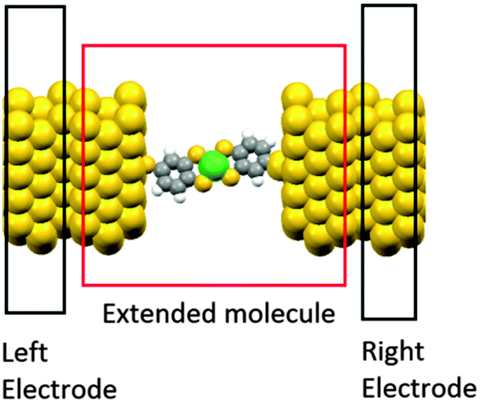

Data Driven Materials Modelling
Data-driven materials modeling leverages the increasing availability of experimental and computational data to establish quantitative relationships between material structure, composition, processing conditions, and properties. Through techniques such as machine learning, compressed sensing, and statistical learning, complex materials behavior can be analyzed and predicted with significantly reduced computational cost. This paradigm complements traditional theory- and simulation-driven approaches, enabling rapid screening of candidate materials, uncovering hidden physical insights, and accelerating materials design and discovery.

Reaction Mechanism of ALD Process
Atomic Layer Deposition (ALD) is a vapor-phase thin-film growth technique that enables atomic-scale control of film thickness and composition through sequential, self-limiting surface reactions. My research has focused on elucidating the reaction mechanisms of ALD processes using density functional theory (DFT) calculations. In particular, I have investigated the interactions of Al₂O₃ and HfO₂ precursors with hydroxylated Al₂O₃ and SiO₂ surfaces, which serve as representative substrates for dielectric film growth. Through systematic exploration of adsorption configurations, reaction pathways, activation barriers, and surface intermediates, this work has provided atomic-scale insights into precursor reactivity, ligand exchange processes, and the factors controlling nucleation and growth behavior. These studies contribute to a fundamental understanding of ALD chemistry and support the design of more efficient deposition processes for advanced electronic and energy-related applications.

Atomistic Materials Simulation
Molecules, oligomers and polymers containing heterocyclic units of chalcogen elements and transition metals like nickel are greatly attractive as promising π-conjugated organic semiconductors that are at the heart of the fabrication of high-performance organic devices such as organic light-emitting diodes (OLEDs), organic field-effect transistors (OFETs), and organic photovoltaic cells (OPVs).
We designed and performed systematic investigations on the structures and electronic properties, charge transport characteristics of several series of heterocyclic oligomers and transition metal complexes using quantum chemical methods.
